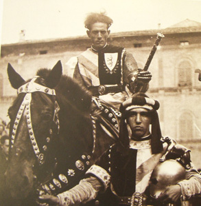
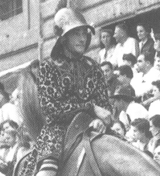

1. 16 agosto 1928 PANTERA Sauro di G.Fregoli 2. 2 luglio 1929 PANTERA Margiacchina 3. 16 agosto 1929 ISTRICE Grigio di P.Fontani 4. 3 luglio 1930 TORRE Burattino 5. 16 agosto 1930 TORRE Proserpina 6. 2 luglio 1931 ISTRICE Morello di E.Tiezzi 7. 16 agosto 1931 SELVA Zola 8. 3 luglio 1932 TORRE Tordina 9. 16 agosto 1932 TORRE Gobba 10. 2 luglio 1933 ISTRICE Sauro di A.Mantovani 11. 16 agosto 1933 VALDIMONTONE Melisenda 12. 16 agosto 1934 BRUCO Masina 13. 2 luglio 1936 SELVA Masina 14. 16 agosto 1936 TORRE Bengodi 15. 2 luglio 1938 SELVA Masina 16. 16 agosto 1938 TORRE Pollino 17. 2 luglio 1939 CIVETTA Girardengo III 18. 16 agosto 1947 CHIOCCIOLA Stelma 19. 2 luglio 1948 CIVETTA Alì 20. 16 agosto 1948 GIRAFFA Falchetto 21. 2 luglio 1953 BRUCO Ravi II   - ALTRI CAPITOLI INERENTI - LE SCHEDE DEGLI ALTRI FANTINI I FANTINI VITTORIOSI DI TUTTI I TEMPI LE DATE DI NASCITA LE STATISTICHE SULL'ETA' PROCESSI E FATTI CURIOSI SUI FANTINI

